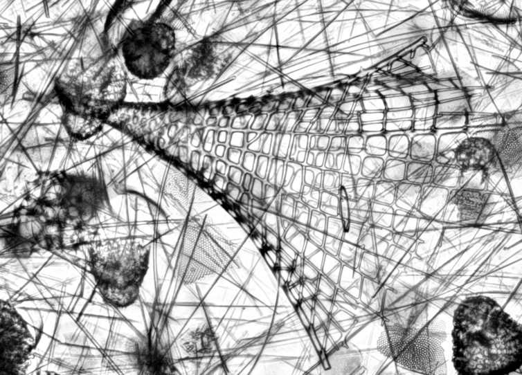
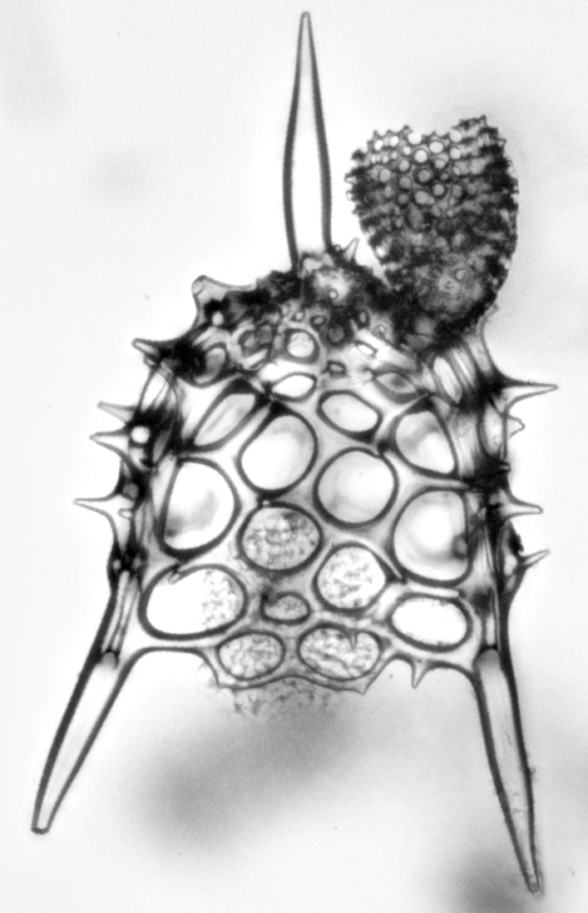
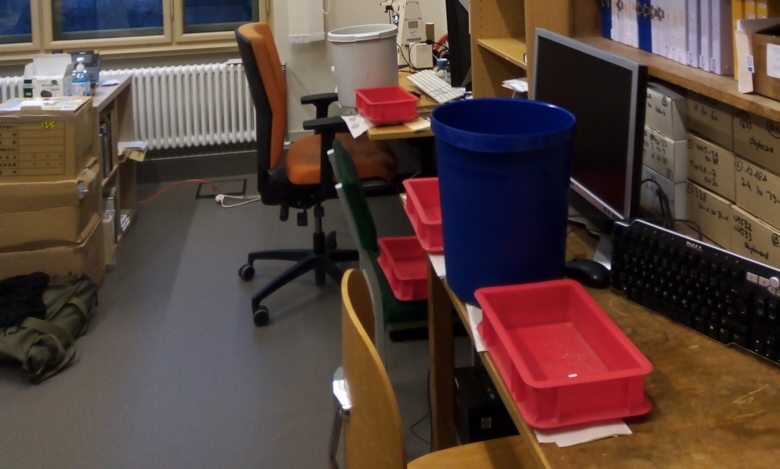
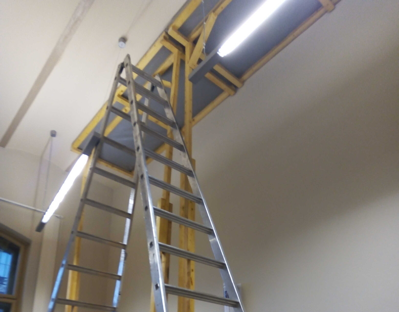

- January: The year started in home office, which I particularly struggled with this year. Meaning I procrastinated a lot. Thankfully I managed to "procrastinate useful" to some extent by programming various projects designed mostly to help colleagues on their projects. One of those projects was published a few months later. Another one led me to learn how to use BEAST2 and MCMCtree, which will finally be useful to me in the coming months (more on that later).
- February: My main activity that month was to help the MfN DB core team porting the NSB database and the website I made for it on a new, updated server.
- March: this month was mostly spent doing analyses for our main project. I also prepared and taught a series of tutorials on paleobiological analyses and more globally on programming for my working group.
- April: I got around to finally start playing with pybacktrack. We also worked that month on an article written for young readers, on various aspects of the biology side of climate change (more on that later when it'll be published).
- May: in May we finally received the Lamont Doherty Earth Observation radiolarian and diatom slide collection (whose acquisition was supposed to happen early 2020) so I spend a significant time that month creating a database to centralize all informations we have on those slides so that we can actually use them for research. May was also the month were I started doing some work for the BioDEEPtime project, which kicked in officially in March, with follow-up meetings in July in particular.
- June: it was my last month this year in home office. I spent it finalizing that small software I did for an exposition in Magdeburg (see past notes on this software) and working on a small project on living plankton climatic envelope I presented at the CPEG Berlin symposium later in September.
- July: a fairly busy month. I finally went back to work in my office that month, I got vaccinated and I finally saw my family after 18 months apart. Workwise, I was pretty busy too as I started writing an MS (as a reply to another), gave final notes on a taxonomical MS we've been planning since a while with Sarah, Dave and Paula; and planned material to help colleagues sailing on the JR for IODP Expedition 396 (as they invited me as shorebased consultant).
- August: I primarily worked on that short MS I started the previous month, and continued that climatic envelope analysis. I also started working with our PhD student Volkan to formalize his taxonomical framework for Eocene diatoms. A lot of literature searches involved :)
- September: That month, I presented the living plankton climatic envelope analysis I have been working on since December 2020 at the CPEG Berlin symposium. As Dave retired in July, I also got to host my first collection guest on his behalf. Since we moved the collection the year before and that the pandemic basically forced us to limit its access for more than a year, it was the first time the collection was visited in its new location. Following that first one, I hosted a dozen of collection visitors since! The rest of the month was spent digging into published paleoclimatic model outputs (to compare with the results of our main projects), working on a second MS with Micha and Momo, going to the Dahlem diatom library to continue our evaluation of Volkan's species, etc.
- October: That month I went back to writing an MS I started working on in November 2019 on Cenozoic plankton diversity dynamic (a work I partially presented at EGU in 2020). I also spent time knee-deep into age models, in order to update a literature compilation of SST our students made. Finally the month ended with a visit from my colleague Margot Courtillat (from the Université de Perpignan) who came to learn Antarctic radiolarian taxonomy as we kickstarted a project on paleotemperature reconstruction based on radiolarian in the Amundsen Sea area (in the context of our Expedition 379 work).
- November: I visited family in Norwich (as I normally do every year in November, safe from 2020). I also started working with some slides from the Lamont collection (I was nicely surprise to see how tremendous their quality and scientific value was), and got another week long visitor as Veronica Carlsson (from the Université de Lille) came to work with me on her project on AI-assisted radiolarian identification (again: more on that later).
- December: The month started brilliantly with a water damage in the office :\ Amid the reparations and the fairly loud air dehumidifier I did manage to get some work done before leaving for holidays though, primarily on that diversity MS and on diatom taxonomy.
|  |  |
I also finally learned to use live Z-stacking with our camera. Here Litharachnium tentorium and Lamprotripus mawsoni from some of the slides from the Lamont collection.
|  |  |
I addition to the things I mentioned above, I continued my reviewing streak (11 manuscripts and 2 proposals reviewed in 2021). I also was fairly lucky to be able to rely on old collaborations to get some paper published despite the overall sluggishness of 2020-2021. Also, I cumulated 221 hours of Zoom meeting in 2021, by my account. I really hope it will be a bit more reasonable in 2022 as this is not a good medium for me.
Overall the year, as 2020, was fairly tiring; in particular as it felt that I crammed a full year of work in the last 6 months of the year. But it was also a year full of opportunities, weirdly, as I started a lot of new, exciting projects with a lot (as in: way more than what is usual for me) of new (and old) collaborators.